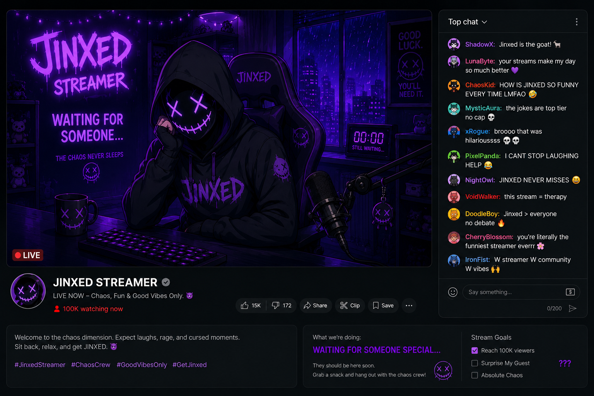

CHAPTER 01

So… this is the part where you realize I've gone missing.
Funny, isn't it?
You spend years talking to thousands of people every single night, and the moment you disappear, the internet turns into a graveyard full of theories.
Some think I quit. Some think I'm dead.
Maybe that would've been easier.
But since you're already here… you probably know who I am.
Or at least who I used to be.
Hi. I'm Jinxed.
Literally and figuratively.
There was a time when my life actually made sense.
Every night, I'd go live and watch the numbers climb faster than my heartbeat.
People waited for me.
I made them laugh. I listened to their stories. I became part of their routines.
Some of them said my streams felt like home.
But I kept coming back for one person.
One viewer.
The same person who had been there from the very beginning.
Every stream, my eyes searched for them first.
Before donations. Before messages. Before everyone else.
I waited for them. Always.
You know what waiting does to a person?
It changes them.
Slowly. Quietly.
One day, you realize your entire life revolves around a single moment that may never happen.
A notification. A message. A username appearing in chat.
That was all it took. And I kept waiting.
For days. For weeks.
Long enough for the waiting itself to become a sickness.
But see? None of it was in vain. Because you came here. For me.
And eventually… I know you'll find me.